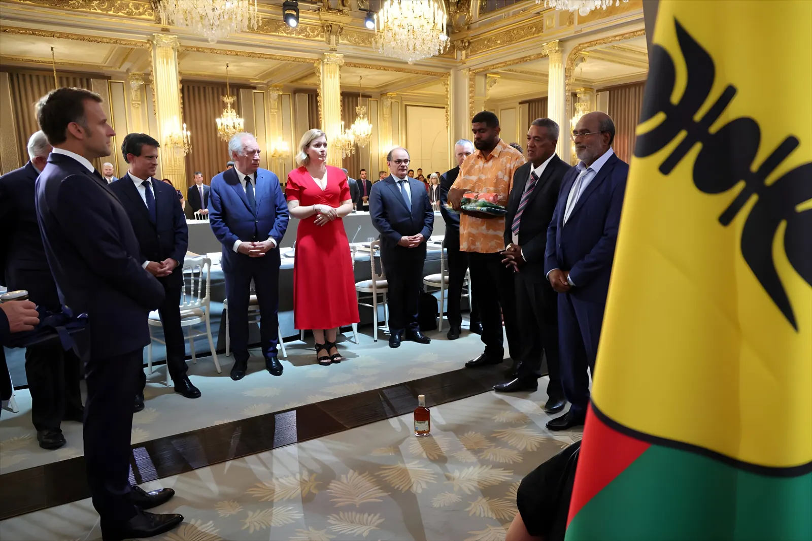

Le 2 avril 2026, l'Assemblée nationale rejette en première lecture le projet de loi constitutionnelle transcrivant les accords de Bougival et Élysée-Oudinot. Ce vote bloque le processus de décolonisation négocié depuis juillet 2025 et replonge la Nouvelle-Calédonie dans une incertitude institutionnelle profonde, alors que les élections provinciales, déjà reportées deux ans, restent sans date fixe et que la fracture entre indépendantistes et non-indépendantistes s'est encore élargie.
Le 12 juillet 2025, au terme d'un sommet organisé à Bougival (Yvelines) à l'initiative d'Emmanuel Macron, un accord est signé entre l'État français et cinq des six formations politiques représentées au Congrès de la Nouvelle-Calédonie. Ce texte de treize pages prévoit la création d'un « État de la Nouvelle-Calédonie » au sein de la République française — un statut inédit — ainsi qu'une double nationalité française et calédonienne, le transfert de compétences en matière de relations internationales et un mécanisme d'auto-organisation institutionnelle.
Son ambition est de sortir l'archipel de l'impasse dans laquelle l'ont plongé les violences de mai 2024 et l'échec du troisième référendum de 2021, boycotté par les indépendantistes. Mais dès sa signature, un acteur majeur fait défaut : le FLNKS (Front de libération nationale kanak et socialiste), principale force indépendantiste, refuse de parapher le texte, le jugeant insuffisant sur la question de la souveraineté.
La fracture au sein du camp indépendantiste constitue l'une des données les plus nouvelles de la crise calédonienne. D'un côté, l'UNI (Union nationale pour l'indépendance, regroupant le Palika et l'UPM) a accepté de signer Bougival, estimant qu'il constitue une étape réaliste vers l'émancipation. De l'autre, le FLNKS et l'Union calédonienne ont boycotté l'accord puis la réunion de l'Élysée de janvier 2026, dénonçant un texte qui ne reconnaît pas le droit du peuple kanak à l'indépendance pleine et entière.
Le FLNKS avance son propre projet — l'accord de Kanaky — fondé sur une accession à la souveraineté complète et un partenariat négocié avec la France. Cette vision se heurte à l'opposition d'une grande partie de la population non-kanak et des loyalistes, pour qui Bougival représente déjà une concession substantielle.
Signature de l'accord de Nouméa. Il prévoit un processus de décolonisation progressif et la tenue de référendums d'autodétermination à partir de 2018.
Trois référendums : 2018 (56,7 % non), 2020 (53,3 % non), 2021 (96,5 % non — mais boycotté par les indépendantistes après le refus de report lié au Covid). Le résultat de 2021 est contesté dans sa légitimité.
Violences majeures après une tentative de réforme du corps électoral. Morts, destructions massives, état d'urgence. Les élections provinciales initialement prévues sont suspendues sine die.
Accord de Bougival signé à Bougival. Le FLNKS et l'UC refusent de signer. L'accord prévoit la création d'un « État de la Nouvelle-Calédonie » et une nationalité calédonienne.
Accord complémentaire Élysée-Oudinot signé à Paris — sans le FLNKS. Il précise le calendrier et le cadre institutionnel. Publié au Journal officiel le 24 janvier 2026.
Le Sénat adopte le projet de loi constitutionnelle par 215 voix pour, 41 contre, 89 abstentions.
Rejet du projet de loi constitutionnelle à l'Assemblée nationale en première lecture. La mise en œuvre des accords est suspendue. De nouvelles discussions sont attendues.
Le Premier ministre réunit les élus calédoniens à Paris pour définir la date et le corps électoral des élections provinciales. L'issue reste incertaine.
La révision constitutionnelle nécessaire pour transcrire les accords de Bougival–Élysée-Oudinot requiert une majorité des trois cinquièmes du Parlement réuni en Congrès. Or le gouvernement ne dispose pas d'une telle majorité à l'Assemblée nationale. Le rejet du 2 avril 2026 en première lecture illustre la fragilité de la situation politique nationale — gouvernement minoritaire, absence de coalition stable — qui se répercute directement sur la capacité de la France à honorer ses engagements calédoniens.
Derrière l'impasse politique se joue aussi une bataille économique. La Nouvelle-Calédonie possède environ 25 % des réserves mondiales de nickel, matière première stratégique pour les batteries électriques. Depuis 2024, l'industrie minière est en crise : plusieurs usines ont fermé, les cours ont chuté et les finances publiques du territoire sont dans un état critique.
En mars 2026, le Congrès calédonien a discrètement autorisé l'exportation de minerai brut — une rupture avec la « doctrine nickel » des accords de Nouméa, qui imposait la transformation locale du minerai avant exportation. Les accords de Bougival-Oudinot auraient transféré la compétence « Mines » à un État calédonien sous tutelle constitutionnelle, ouvrant la voie à une plus grande libéralisation. Pour les indépendantistes, cette évolution vide l'accord de toute perspective de souveraineté économique réelle.
| Acteur | Position sur Bougival | Priorité revendiquée |
|---|---|---|
| État français | Promoteur de l'accord | Stabilité institutionnelle |
| UNI (Palika, UPM) | Signataire favorable | Émancipation progressive |
| FLNKS / UC | Refus — boycott | Indépendance pleine |
| Loyalistes (Rassemblement) | Signataire favorable | Maintien dans la République |
| Assemblée nationale FR | Rejet (2 avr. 2026) | Majorité introuvable |
Après le rejet du 2 avril, trois trajectoires se dessinent. La première est celle d'une renégociation : de nouvelles discussions entre Paris et les partenaires calédoniens pour modifier le texte afin de rallier davantage de voix à l'Assemblée — au risque de perdre des signataires actuels. La deuxième est celle d'un référendum national sur la révision constitutionnelle, contournant le verrou parlementaire — option politiquement coûteuse pour le gouvernement. La troisième, la plus préoccupante, est celle d'un enlisement durable : sans cadre institutionnel stable, les élections provinciales ne peuvent se tenir, privant le territoire d'une représentation politique légitime renouvelée depuis mai 2024.
« Bougival n'est pas un point de départ, mais un point mort. »
— Analyse issue du Journal de la Corse, février 2026, résumant la position du FLNKS« La suite à donner est forcément un accord. »
— Charles Washetine, porte-parole du Palika, avril 2026La Nouvelle-Calédonie vit depuis 2024 une double crise — politique et économique — dont le rejet du 2 avril 2026 n'est pas la cause, mais le révélateur. L'île cumule une hémorragie démographique (cadres, soignants, enseignants qui partent), un effondrement de l'industrie du nickel et une fracture communautaire qui n'a pas cicatrisé depuis les violences de mai 2024. Le cadre juridique peut, à terme, être renégocié. Ce qui est plus difficile à reconstruire, c'est la confiance : entre indépendantistes et non-indépendantistes d'abord, mais aussi entre l'archipel et un État central dont la capacité à tenir ses engagements a été mise en défaut par l'instabilité parlementaire française elle-même.